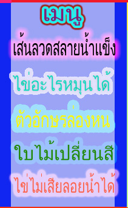

ไข่อะไรหมุนได้
โดยปกติแล้วไข่ที่หมุนไม่ได้ก็คือ ไข่ดิบหมุนทีไรล้มและแตกทุกที เรามีวิธีง่ายๆคือ การนำเอาฟองไข่มาหมุนเหมือนลูกข่าง โดยนำไข่มาสองฟอง ให้ฟองหนึ่งดิบอีกฟองหนึ่งเราจะต้มให้สุก มาหมุนพร้อมกัน จะเห็นได้ว่าไข่ที่ดิบจะล้มแล้วถ้าหมุนแรงๆก็จะแตกได้ ส่วนไข่ที่ต้มสุกแล้วนั้นจะหมุนได้อย่างชัดเจน เรามาดูกันว่าทำไมไข่ดิบไม่สามารถหมุนได้เพราะอะไรแล้วทำไมไข่ที่ต้มสุกจึงหมุนได้


เพราะไข่ดิบ เมื่อจับหมุนแบบลูกข่างสักครู่ ไข่ดิบฟองนั้นจะล้มลงอย่างระเนระนาดและล้มลงอย่างรวดเร็วที่เป็นเช่นนั้นเพราะว่า เนื้อไข่ดิบมีลักษณะเหนียวข้นเป็นของ
หนืด จึงไม่ยอมเคลื่อนที่ไปในทิศทางเดียวกันกับเปลือกไข่ และเมื่อการเคลื่อนที่ภายในไข่ฟองเดียวดำเนินไปอย่างไม่สามัคคีกัน ไข่ดิบจึงล้มลงเร็วมาก
แต่ถ้าเป็นไข่สุก หรือไข่ต้มแล้ว ภายในไข่จะเป็นของแข็งทั้งหมด ทีนี้ไม่ว่าจะหมุนแบบลูกข่างกี่รอบๆ ไข่ทั้งฟองก็จะสามัคคีกันดี
คือเนื้อไข่และเปลือกไข่จะเคลื่อนที่ไปพร้อมๆกันในทิศทางเดียวกันด้วย ทำให้ไข่สามารถทรงตัวอยู่ได้นานในขณะหมุน